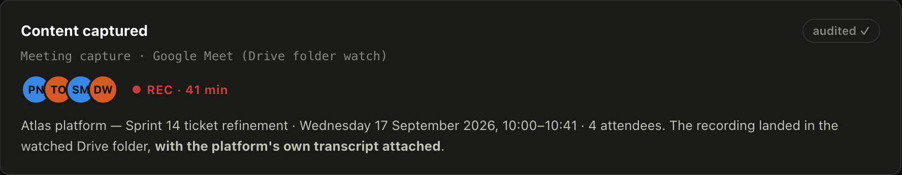
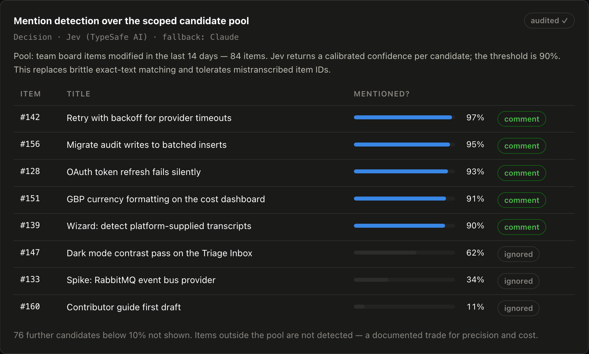
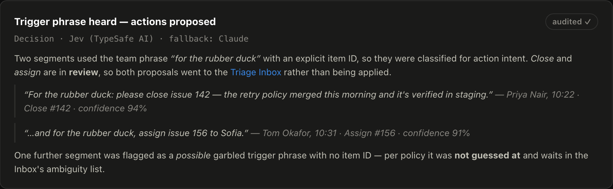
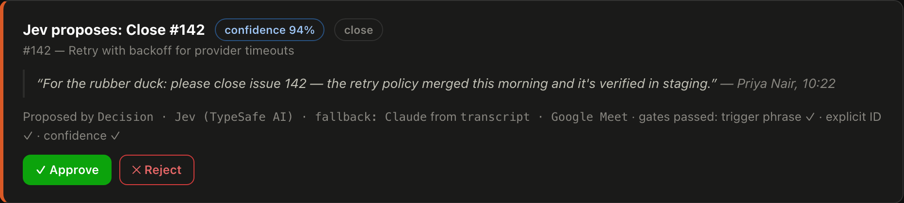
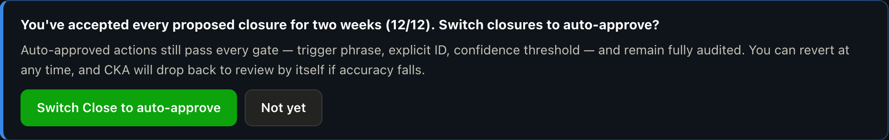

One meeting. Watch what happens.
Real screenshots from the interactive prototype — fabricated people, real interface.
10:00 — the team meets, as usual
Sofia, Tom, Priya and Dan run their usual refinement call on Google Meet. Nobody takes notes for the robot — CKA is just watching the folder where recordings land.

They just… talk
Sofia flags a problem with #156, Tom digs into the OAuth bug in #128. Just conversation — and CKA notices every ticket that came up and posts a link to the meeting on each one. No magic words needed for that.

Priya wants action — so she says the magic words
“For the rubber duck: please close issue 142 — the retry policy merged this morning and it's verified in staging.” The team's trigger phrase plus an explicit ticket number is the only way CKA will ever touch a ticket.

CKA kicks into action
The meeting is summarised and filed in the knowledge base, comments are posted, and closing #142 is queued as a proposal — 94% confident, showing exactly which AI decided and which gates it passed. Nothing has actually changed yet.

Amanda has the last word
Amanda, the team lead, reviews the proposal. One click — ticket closed, fully audited. And because the AI has got every closure right for two weeks, CKA offers to handle closures on its own from here. Her call, reversible any time. Don't just trust it — see it earn it.

That's the golden path. Try it yourself in the prototype →